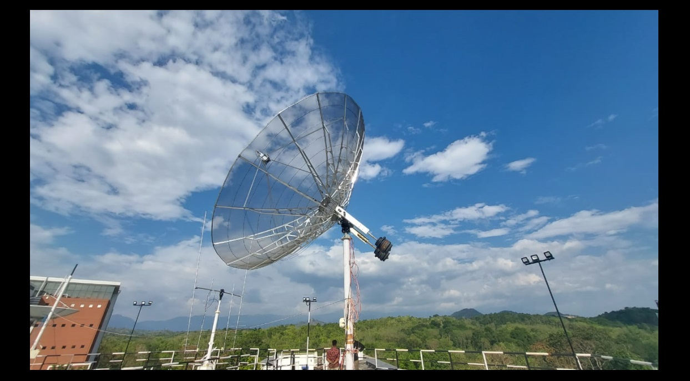

INSPIRESat-1 (IS-1) was the first satellite desgined by the students of IIST and successfully operated throughout its mission lifetime. Upcoming from the COVID-19 lockdowns, the satellite was planned to launch on 14th Feb 2022. Our batch was the worst hit batch with the COVID-19 pandemic. After one and half years of our online engineering, we were back into the campus with full energy to roam around and get involved into the projects which our institute was working on. Few months before the launch the satellite was shifted from LASP, Colorado, USA to SSPACE, IIST, India. But back then, the campus was not at all populated with students because of the pandemic restrictions. PI of the mission and head of SSPACE lab Prof. Priyadarshanam Sir took a decision to bring back some students who were actively involved in the desgined phase of the mission. After the satellite was shifted, the final hardware testings were to be performed with a help from LASP team.
Testing team within our institute spent their day and night for testing the satellite. Parallel to these activities, another ground Station team lead by Prof. Ravindranath Sir and Mr. Joji John Verghese were involved in setting the ground station so that we can receive signal from INSPIRESat-1 and transmit back to it. Satellite Ground station was established over the Aerospace Block within our Campus. Most difficult part of setting up the ground station antennas was to deal with the nature. Kerala being a rain prone state receives rain nearly 10 months within a year. Under such conditions, the maintenance of the antennas was one another difficult task which will be discussed later.
After all the preparations were completed the satellite was launched at dawn of 14th Feb. I wasn't directly involved in the mission during that time, but was still quite interested to watch the launch and support my seniors for the overnight work which they have accomplished. The satellite was going to be launched using a work horse rocket of ISRO known as PSLV. The launch was superb and the main satellite along with the co-passenger satellites (IS-1 was one of them) were deployed into a preceise orbit. Now as the satellite was in the orbit, it was job of our ground station to receive the signal from the satellite. IS-1 was going to pass over our ground station in the evenings of the launch day. All the faculties from our institute were equally excited as students to know the status of the satellite. Few hours before the satellite was set to pass over IIST, it had already passed our LASP ground station. They did saw the signal or what we call as beacons in the spectrum but were enable to decode the data hidden within it. All were eagarly waiting for the satellite to pass over IIST. When the Arrival of signal became zero which showed that the satellite is now set to travel above the horizon, all the prerequists to receive the signals were compelted. The antenna motors were engaged to rotate. We were able to see some signals but not able to decode until the satellite was at zenith. The elevation was high enough and the signal strength was perfect to pass through our antenna reception chain. The signal/beacon was decoded and all the health parameters of the satellite were displayed onto the big screen. The data showed that the satellite was working nominally and has passed through the extreme vibrations during the launch. During the subsequent passes upnext, the operators felt that the location of the antennas were not right. Some mountains and buildings were acting as an obstruction to the satellite signal and hence the commands sent from the ground station were not reaching to the satellite. So the decision was taken to add another UHF/VHF antenna on top of the library building (Topmost Building) within our campus. The setup for that antenna was completed in no time as it was the highest priority work at that time.
I had an older connection with SSPACE Lab during our induction programme for the lab. Our induction project was to design a cubesat to detect exoplanets. I worked on laser communication and some part of CDH during that project. But our group did not last long as we all were interacting in online mode which was another hectic task. The network connection would make that terrible. When the lockdown was over and we were called back into the college, apart from maintaining a good CGPA I also wanted to get involved in satellite building activities. And on one such morning on checking the mails, I saw a mail for an opportunity to join the ground station operations team for the INSPIRESat-1 mission. Now the mission was already been so much popular all around the campus. So there will be many applicants for this post to join this esteem mission team. Handling studies along with each activities wass my biggest conern to not apply at that time. It was my fourth semester in the Offline mode for the first time. Lot of nerves at the starting. But soon as three-fourth semester was completed, I felt like my studies were going good and now I shall focus on some other activites.
Being punctual and doing time to time studies was my habit from day-1 of the semester starts. This gave me a chance to side by side engage in different activites too. On one long weekend, my friend asked me to join the ground station operations team with him. I was completely shocked at that time knowing that there is still vacancy for the post which I was assuming to be very esteem and of much value. It was indeed a good chance to work on the live missions and to control the in orbit satellite. At that point of time I accpeted the offer and started going every morning and evening to take the passes of the satellite. It was really fun during initial days while observing our seniors operating the satellite unknowing that some day in future we will be in their position. After intense learning and observation, we were given permission to command to the satellite and receive data from it. This was my entry into not only ground station but at SSPACE Lab.
Carrying forward the operations of INSPIRESat-1, each and every day we were learning new things. We were getting more excited to know every small aspect of working of the ground station as well as the satellite. All the payloads were brought into its operational modes and the satellite was working in full swing. After completing the fourth semester, now it was time for summer vacations. Definately we cannot leave the ground station and go back to our home. So I and my friend decided to stay back turn by turn to take passes of the satellite. Along with that one month of operations in vacations, I also tried to gain more knowledge about the working of each and every softwares involve in the operations. As my turn was over, I went back to my home for one month of vacation (which was suppose to be of 2 months). Dr. Priyadarshanam Sir, who was my mentor, guide and more importantly my close friend asked me to take this journey of softwares to next level. Together we decided to come up with some robust open source software to be used for Ground Station for future satellite missions. This lead to my second project which will be discussed in another tab.
Maintenance of the Antennas was one of the biggest task which I was involved in during the fifth semester of my academics. Still now, I was little confused on how much time to be given for all this extra curricular activites at ground stations. Whenever the ground station team felt my need, I was ready to help them in any possible way I can. During rainy days of retreating moonsoon at our campus, a giant lightning cause our ground station to fail badly. On Debugging the point of failure, we noticed that almost all the components were damaged and should be replaced. This also gave us the opportunity to get to know the complete setup of the ground station, test our new ground station software which I configured and most importantly visit library top😊. It took us almost five months (Including 1 month of Winter vacation) to bring back the complete setup into operational mode.
During the maintenance period we switched our operations on the antennas placed on the top of aerospace building. We were able to keep the satellite functional and avoid it from getting reset multiple times. The satellite was also responding positively and worked well except few glitches until its first launch anniversery. Yes, the satellite operated more than its mission lifetime and to celebrate🎊🎉 this grand success we had a celebration at SSPACE lab with our seniors. Meanwhile during that period (Sixth Semester), I was involved in yet another mission for which I was responsible for writing the flight software and testing it with the ground station software along with my seniors. This is one another story to be discussed in some other tab. SSPACE also organised a workshop on Advances in Small Satellite Emerging Technology (ASSET) to celebrate the first anniversery of INSPIRESat-1. I got a chance to meet Dr. Amal Chandran (PI for INSPIRESat-1 from LASP, US) and Dr. Kannan S.A (Programme coordinator Student Satellite Projects URSC, ISRO).